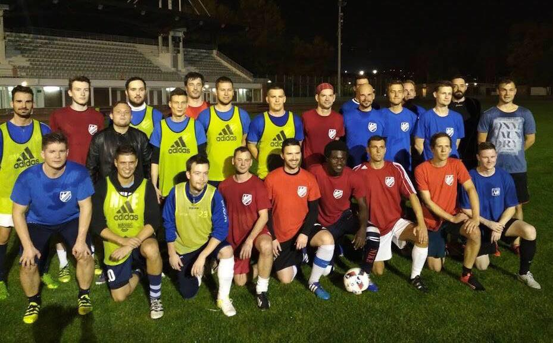
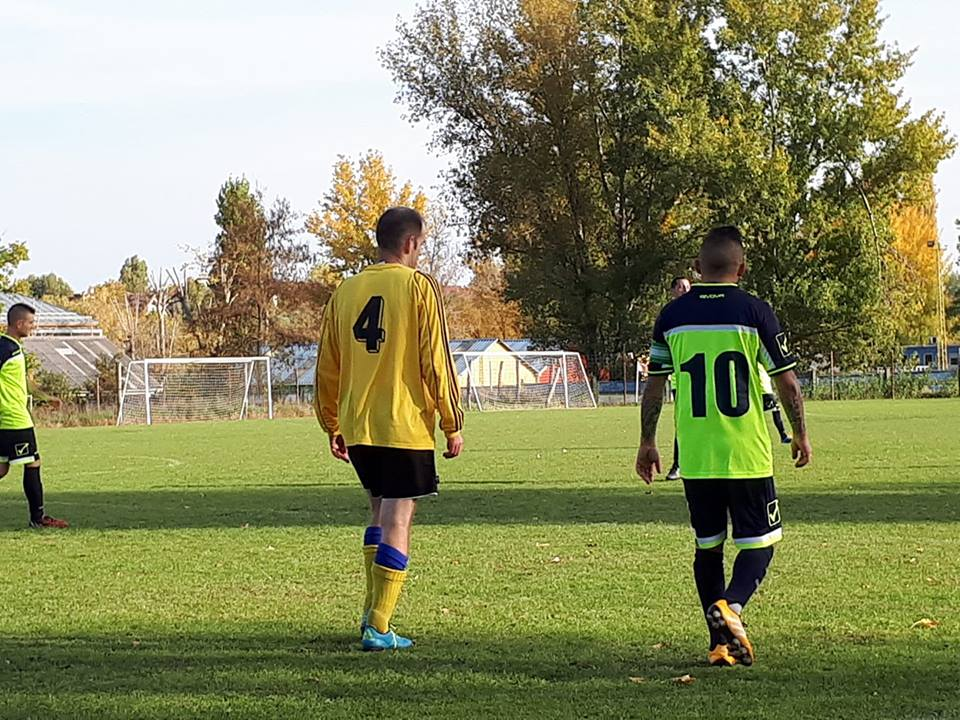
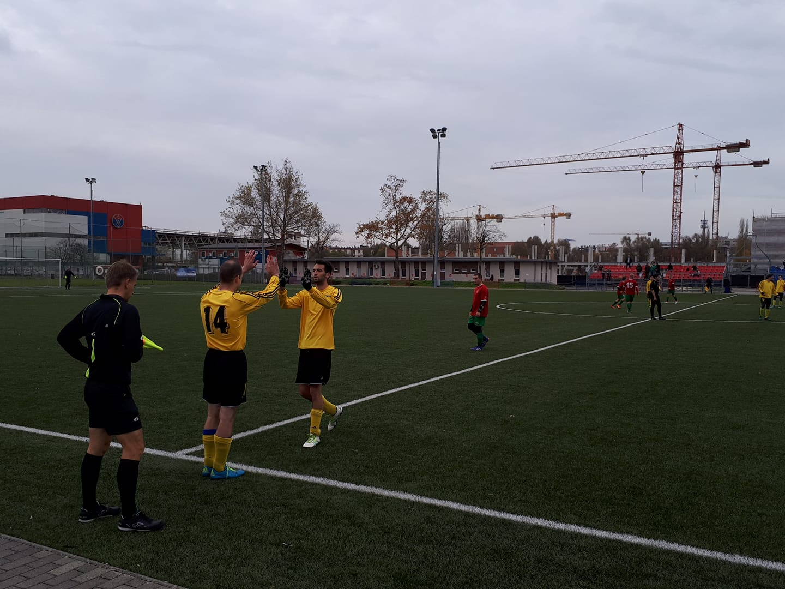
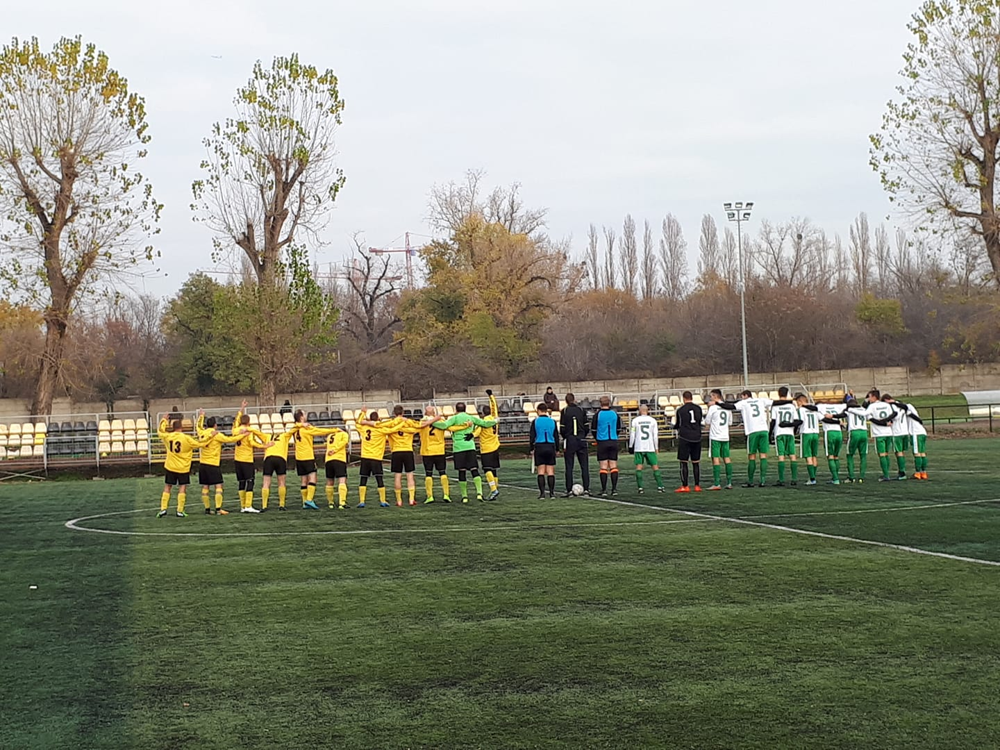

A csapatról
A Margitszigeti labdarúgás mindig jelen volt és fontos szerepet játszott a fővárosi labdarúgó sportéletben. Itt létesült az első budapesti futballpálya, és a XX. század második felében több válogatott játékos került ki innen, annak ellenére, hogy felnőtt csapat akkor még nem volt. Példaként említhető például Nyilasi Tibor vagy Zavadzky Gábor, akik mindig is büszkén említették az Úttörő Stadionos múltjukat. Egyesületünk célul tűzte ki, hogy felkarolja az ifjúsági bajnokságokból kiöregedő, a hivatásos szinten nem érvényesülő, de továbbra is sportolni kívánó fiatalokat, és lehetőséget adjon az egészséges életmód fenntartásához. Ennél talán még fontosabb törekvésünk, hogy a Margitszigeti Futball Club újra szeretné építeni a Margitsziget kiemelt, utánpótlás nevelő szerepét. A létesítmény (Margitszigeti Atlétikai Centrum) elhelyezkedése és természetközelsége nem hasonlítható össze más Budapesti futballpályával, itt kiváló körülmények között, friss levegőn sportolhatnak a fiatalok a város közepén.